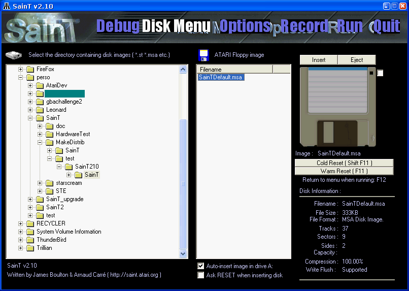

SainT is spreaded in auto-extractible format since v0.99. Just download and execute the SainT package. Choose a directoy anywhere on your hard-disk. (a good one should be \Program File\SainT) . You also need the microsoft DirectX API in order to run SainT. If you never installed DirectX8.1, you can get it freely at microsoft web site.
As all personal computer, ATARI-ST needs a ROM program to startup. That operating system was called "TOS" for the ATARI machines. You have a default ATARI rom installed with the SainT package. WARNING: SainT has some TOS comptability problem, so use TOS 1.00 only !!
ATARI-ST was a 720Kb floppy disk machine. Every game or demos were located on such media. As many emulators, the easyest way to run theses disks if to generate a file, wich is exactly the binary image of the disk. You can find many of these disk image on the internet now, so if you're a newbie don't spent time to convert your own floppys ! SainT supports four image disk format (.ST, .MSA, .DIM and .FDI) but almost all image disk you can grab on the world wide web are ST or MSA files. (NOTE: SainT can read these format inside ZIP archives)
First time you run SainT, you get a page like this one:

The right treeview represents your harddisk structure. Simply click on a directory, and the left-treeview show you the ATARI disk-image contained in that directory. (NOTE: ZIP archive file are displayed as a directory in the right treeview, as a classic directory).
To insert a disk image in the virtual ATARI floppy drive, just click on a disk image in the right pannel to select it, then click on the "Insert" button near to the floppy picture. (you can activate the "Auto Insert image in drive A" checkbox to avoir clicking on "Insert" each time you insert a new disk image).
Just click on the "Run" button at the top-right to run your fave game or demo !! (when running, press the F12 key to go back to the SainT menu)